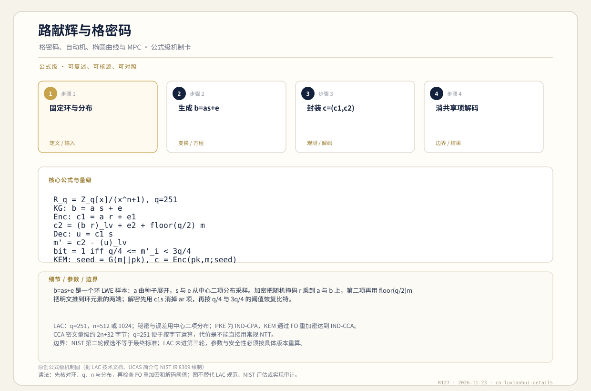

原理与机制
中国密码史：路献辉与格密码（Lu Xianhui and Lattice Cryptography）。### 环 LWE 的一个具体样本
LAC 不直接写“格上的 LWE”，而是把样本放到环 (R_q=\mathbb{Z}q[x]/(x^n+1))：公钥 (b=as+e)，其中 (a) 由种子展开，(s,e) 从中心二项分布采样。加密取随机掩码 (r)，得到 (c_1=ar+e_1)，并把第二项写成 (c_2=(br){l_v}+e_2+\lfloor q/2\rfloor m)。### 解密为什么能消掉共享项
解密先算 (u=c_1s)，再用 (c_2-(u)_{l_v}) 去掉 (ars) 这一共享项；剩下的噪声被 (\lfloor q/2\rfloor m) 的两端编码隔开，于是按 (q/4\le m_i<3q/4) 逐位判定 0/1。KEM 层再用 FO 变换重加密校验密文，才从 IND-CPA 的 PKE 走到 IND-CCA。

为什么重要
环 LWE 是后量子公钥密码的一条主线，LAC 把“环、模数、分布、编码、FO”这些抽象参数落成可执行算法。它选 (q=251) 的字节模数，牺牲常规 NTT 的加速，换取字节级实现和带宽；这类取舍是公式级读法，不是“格密码一定安全”的口号。
应用与实例
1.先确定安全级别，再选 n 与 q；不同 n/q/分布不能拼成同一个参数集。2.核对公钥是否只含种子和 b，私钥是否是 s；不要把种子当秘密。3.加密时检查两项密文与 (\lfloor q/2\rfloor m) 的编码，解密时检查 q/4 与 3q/4 的阈值。4.KEM 必须检查 FO 的 G/H 域分离与重加密比较，不能只跑 PKE。5.记录版本、参数、错误率和实现路径；历史候选的参数不能直接搬到今日部署。### 不能怎么用
不能把 q=251 说成“越小越安全”；不能把 LAC 的第二轮结果说成 NIST 标准；不能把公式当成侧信道或解码错误的证明；不能在没有重加密检查时声称 KEM 是 IND-CCA。
边界与攻击面
1.参数不匹配：n、q、秘密/误差分布、纠错码与哈希域分离任一改变，安全性都要重算。2.解码边界：阈值依赖噪声上界；错误率升高会让解密失败或泄漏信息。3.实现相关：NIST 报告指出 LAC 第一轮的纠错码和变时实现曾被攻击，后续修改并不等于所有实现都安全。4.版本相关：第二轮候选、修改版和最终标准不是同一对象。5.模型相关：FO 的随机 oracle/QROM 假设、侧信道模型与故障模型都要单独声明。
历史与背景
路献辉 2009 年获西南交通大学信息安全博士，2009–2012 在中国科学院研究生院信息安全国家重点实验室做博士后，2013 年起在中国科学院信息工程研究所工作，2020 年起任研究员。LAC 于 2019 年 1 月进入 NIST PQC 第二轮，提交团队包括路献辉、贾丁丁、薛海洋、何静楠、张振飞、刘哲、杨浩；NIST IR 8309 记录它在第二轮后未进入第三轮。
时间线、证据与争议
登记年份以来源账本为准；背景是后量子中此前技术、机构与冲突的累积；过程只写有来源支持的参与者、地点与行动；结果写它改变了哪些标准、机器、课程或政策；争议写二手叙述与一手材料的差距。来源包括：Wikipedia search entry for 路献辉与格密码；《密码简史：穿越远古 展望未来》（杨义先、钮心忻，电子工业出版社，2020，ISBN 9787121398711）。
不要把“发生过”写成“已证明”，也不要把事件标题扩写成机制结论；没有日期的节点只作逻辑位置。
逐步示例与核验
事件时间线模型
背景 → 过程 → 结果 → 争议。背景写此前技术/制度；过程写可核参与者与时间；结果写后续标准、机器、课程或政策；争议写二手叙述与一手材料的差距。
参考出处
- Wikipedia search entry for 路献辉与格密码. https://zh.wikipedia.org/w/index.php?search=%E8%B7%AF%E7%8C%AE%E8%BE%89%E4%B8%8E%E6%A0%BC%E5%AF%86%E7%A0%81
- 《密码简史：穿越远古 展望未来》（杨义先、钮心忻，电子工业出版社，2020，ISBN 9787121398711）. https://book.cppinfo.cn/Encyclopedias/home/index?id=3730464